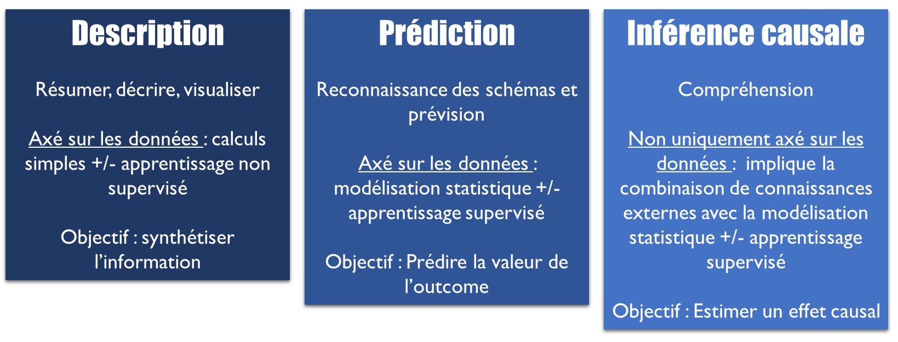

Chapitre 2 Introduction
Comment telle prédisposition génétique et telle exposition environnementale inter-agissent-elles ? L’effet de tel traitement varie-t-il selon les circonstances ? Selon les caractéristiques du patient ? Telle intervention peut-elle être bénéfique pour un groupe social et délétère pour un autre ?
De nombreuses questions épidémiologiques impliquent des mécanismes d’interactions ou de modifications d’effet. Pourtant, étudier ces mécanismes restent encore complexe aujourd’hui sur le plan méthodologique : quelle démarche adopter ? sur quelle échelle mesurer cette interaction ? comment interpréter les coefficients ? et cetera.
Dans ce document, nous proposons une synthèse de la littérature et une démarche progressive et appliquée pour explorer ces questions.
2.1 Quand étudier les interactions ?
2.1.1 Prediction versus causalité
La science des données cherche à répondre à 3 types d’objectifs [1] :

Selon le type d’objectif, la démarche d’analyse et les enjeux méthodologiques ne vont pas être les mêmes. Si l’objectif est prédictif, la démarche va être centrée sur la prédiction de l’outcome, à partir de covariables sélectionnées afin d’optimiser les performances de la prédiction, tout en prenant en compte leur disponibilité en pratique et la parcimonie du modèle.
Dans une démarche explicative, ou étiologique, au contraire, la démarche va être centrée sur l’estimation d’un effet causal, en prenant en compte les covariables en fonction de leur rôle vis-à-vis de l’effet d’intérêt (facteurs de confusion, colliders, médiateurs…).
En épidémiologie, à l’exception des cas où l’on souhaite développer un test ou score diagnostique ou pronostique, les objectifs sont le plus souvent explicatifs. On cherche en effet, la plupart du temps, à identifier des liens de cause à effet, afin de pouvoir agir sur les causes pour modifier les effets.
Finalement, pour répondre à la question “quand doit-on prendre en compte les interactions ?”, il est d’abord nécessaire d’identifier dans quel type de démarche l’on s’inscrit :
- Démarche prédictive : on ajoutera alors les interactions dans le modèle de prédiction, pour le rendre plus flexible, si cela améliore les performances de la prédiction [2].
- Démarche explicative/étiologique : on étudiera les interactions ou modifications d’effet, si cela répond directement à l’objectif. Par exemple :
- Si l’objectif est du type “l’effet de \(\small X\) sur \(\small Y\) varie-t-il en fonction de \(\small V\) ?”, on prendra en compte l’interaction entre \(\small X\) et \(\small V\).
- Les objectifs qui nécessitent la prise en compte de l’interaction peuvent aussi être du type : “Quel est l’effet conjoint de \(\small X\) et \(\small V\) sur \(\small Y\) ?” ou “Quel part de l’effet de \(\small X\) sur \(\small Y\) disparaît quand \(\small V\) est modifié ?”, etc.
- Par contre, si l’objectif est simplement d’estimer l’effet de \(\small X\) sur \(\small Y\), ou l’effet médié par un médiateur \(\small M\), la prise en compte des interactions entre \(\small X\) et des covariables (facteurs de confusion ou médiateurs) n’est pas indispensable pour répondre à la question scientifique. Un effet “moyen” pourra être estimé. Des termes d’interactions peuvent cependant être ajoutés (mais non interprétés), si cela améliore la précision de l’estimation (enjeu d’optimisation du modèle).
2.1.2 Types d’objectifs
Dans ce document, nous nous intéresserons principalement aux interactions et modifications d’effet dans une démarche étiologique/ explicative.
Les objectifs pouvant nécessiter l’étude de l’interaction/modification d’effet sont [2] :
- Cibler des sous-groupes. Par exemple, identifier des sous-groupes pour lesquels l’intervention aura le plus d’effet afin de pouvoir cibler l’intervention en cas de ressources limitées, ou s’assurer que l’intervention est bénéfique pour tous les groupes et pas délétères pour certains groupes.
- Explorer les mécanismes d’un effet. Par exemple, en cas d’intervention qui n’a d’effet qu’en présence ou absence d’une caractéristiques particulière (définition mécanistique de l’interaction) ou seulement conjointement à une autre intervention.
- Etudier l’effet d’une intervention pour éliminer une partie de l’effet d’une exposition non modifiable. Par exemple, quelle part de l’effet du niveau d’éducation des parents sur la mortalité disparaîtrait si on intervenait sur le tabagisme à l’adolescence ? Ce type d’objectif est proche d’un objectif ciblant la médiation d’un effet, par exemple la médiation de l’effet du niveau d’éducation des parents par le tabagisme, mais les mécanismes envisagés et explorés ne sont pas exactement les mêmes. Explorer ces deux types de mécanismes peut nécessiter des approches spécifiques (voir chapitre 17)
2.2 Les points les plus importants
La première étape importante consiste donc à définir précisément l’objectif :
- L’objectif est-il de type descriptif, prédictif ou explicatif ?
- Si l’on est dans une démarche explicative, d’inférence causale, est-ce que la mesure d’un effet d’interaction est nécessaire pour y répondre ? (identifier précisément l’effet que l’on cherche à estimer, ou estimand).
Ensuite, de nombreuses questions se posent pour réaliser une analyse d’interaction, auxquelles nous tentons de répondre dans ce document :
- S’agit-il d’une interaction ou une modification d’effet ? (Chapitre 4)
- Sur quelle échelle la mesure-t-on ? Un effet d’interaction peut en effet être défini sur une échelle multiplicative ou additive, et les résultats entre ces échelles peuvent être contradictoires. (Chapitre 5)
- Quels paramètres présenter et comment les interpréter ? (Chapitre 6)
- Comment estimer ces paramètres ? (Chapitre 9 et Chapitre 10)
- Comment représenter cette interaction graphiquement ? (Chapitre 11)
2.3 Avertissement
Les analyses d’effets d’interaction (ou de modifications d’effets) sont peu puissantes. Pour observer un effet d’interaction “statistiquement signitificatif”, le nombre de sujets nécessaire est habituellement beaucoup plus élevé que le nombre de sujets nécessaire permettant d’observer une différence global entre 2 moyennes ou pourcentages.
A titre d’exemple, Brookes S et al (2004) [3] décrivent que dans un contexte d’essai contrôlé randomisé à deux bras parallèles, équilibrés, incluant un nombre de sujets \(N\) optimisé pour observer une différence \(\Delta\) significative entre un groupe exposé et un groupe non-exposé avec une puissance de 80%, la puissance pour observer un effet d’interaction de taille similaire (\(\approx \Delta\)) ne sera que de 29%.
Pour observer une effet de taille similaire (\(\approx \Delta\)) de manière significative, le nombre de sujets à recruter sera 4 fois plus élevé (\(4 \times N\)). Si l’on cherche à mesurer de manière significative des effets d’interaction plus petits que l’effet global entre groupe exposé et non-exposé, le nombre de sujets nécessaires augmente de manière spéctaculaire :
- 6 fois plus élevé (\(6 \times N\)) pour rechercher une interaction un peu plus petite correspondant à 80% de l’effet global (\(0,80 \times \Delta\)),
- 15 fois plus élevé (\(15 \times N\)) pour rechercher une interaction égale à la moitié de l’effet global \(\left(\frac{\Delta}{2}\right)\),
- 100 fois plus élevé (\(100 \times N\)) pour rechercher une petite interaction égale à 20% de l’effet global (\(\left(\frac{\Delta}{5}\right)\)).